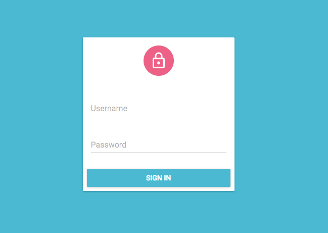
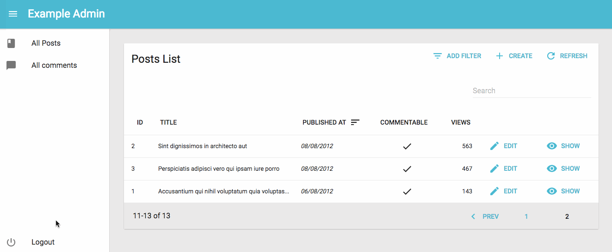

Authentication
Admin-on-rest lets you secure your admin app with the authentication strategy of your choice. Since there are many different possible strategies (Basic Auth, JWT, OAuth, etc.), admin-on-rest simply provides hooks to execute your own authentication code.
By default, an admin-on-rest app doesn’t require authentication. But if the REST API ever returns a 401 (Unauthorized) or a 403 (Forbidden) response, then the user is redirected to the /login route. You have nothing to do - it’s already built in.
Configuring the Auth Client
By default, the /login route renders a special component called Login, which displays a login form asking for username and password.

What this form does upon submission depends on the authClient prop of the <Admin> component. This function receives authentication requests (type, params), and should return a Promise. Login calls authClient with the AUTH_LOGIN type, and { login, password } as parameters. It’s the ideal place to authenticate the user, and store their credentials.
For instance, to query an authentication route via HTTPS and store the credentials (a token) in local storage, configure authClient as follows:
// in src/authClient.js
import { AUTH_LOGIN } from 'admin-on-rest';
export default (type, params) => {
if (type === AUTH_LOGIN) {
const { username, password } = params;
const request = new Request('https://mydomain.com/authenticate', {
method: 'POST',
body: JSON.stringify({ username, password }),
headers: new Headers({ 'Content-Type': 'application/json' }),
})
return fetch(request)
.then(response => {
if (response.status < 200 || response.status >= 300) {
throw new Error(response.statusText);
}
return response.json();
})
.then(({ token }) => {
localStorage.setItem('token', token)
});
}
return Promise.resolve();
}
Tip: It’s a good idea to store credentials in localStorage, to avoid reconnection when opening a new browser tab. But this makes your application open to XSS attacks, so you’d better double down on security, and add an httpOnly cookie on the server side, too.
Then, pass this client to the <Admin> component:
// in src/App.js
import authClient from './authClient';
const App = () => (
<Admin authClient={authClient}>
...
</Admin>
);
Upon receiving a 403 response, the admin app shows the Login page. authClient is now called when the user submits the login form. Once the promise resolves, the login form redirects to the previous page, or to the admin index if the user just arrived.
Sending Credentials to the REST API
To use the credentials when calling REST API routes, you have to tweak, this time, the restClient. As explained in the REST client documentation, simpleRestClient and jsonServerRestClient take an httpClient as second parameter. That’s the place where you can change request headers, cookies, etc.
For instance, to pass the token obtained during login as an Authorization header, configure the REST client as follows:
import { simpleRestClient, fetchUtils, Admin, Resource } from 'admin-on-rest';
const httpClient = (url, options) => {
if (!options.headers) {
options.headers = new Headers({ Accept: 'application/json' });
}
const token = localStorage.getItem('token')
options.headers.set('Authorization', `Bearer ${token}`);
return fetchUtils.fetchJson(url, options);
}
const restClient = simpleRestClient('http://localhost:3000', httpClient);
const App = () => (
<Admin restClient={restClient} authClient={authClient}>
...
</Admin>
);
If you have a custom REST client, don’t forget to add credentials yourself.
Adding a Logout Button
If you provide an authClient prop to <Admin>, admin-on-rest displays a logout button in the sidebar. When the user clicks on the logout button, this calls the authClient with the AUTH_LOGOUT type. When resolved, the user gets redirected to the login page.
For instance, to remove the token from local storage upon logout:
// in src/authClient.js
import { AUTH_LOGIN, AUTH_LOGOUT } from 'admin-on-rest';
export default (type, params) => {
if (type === AUTH_LOGIN) {
// ...
}
if (type === AUTH_LOGOUT) {
localStorage.removeItem('token');
return Promise.resolve();
}
return Promise.resolve();
};

The authClient is also a good place to notify the authentication API that the user credentials are no longer valid after logout.
Checking Credentials During Navigation
Admin-on-rest redirects to the login page whenever a REST response uses a 403 status code. But that’s usually not enough, because admin-on-rest keeps data on the client side, and could display stale data while contacting the server - even after the credentials are no longer valid.
Fortunately, each time the user navigates, admin-on-rest calls the authClient with the AUTH_CHECK type, so it’s the ideal place to check for credentials.
For instance, to check for the existence of the token in local storage:
// in src/authClient.js
import { AUTH_LOGIN, AUTH_LOGOUT } from 'admin-on-rest';
export default (type, params) => {
if (type === AUTH_LOGIN) {
// ...
}
if (type === AUTH_LOGOUT) {
// ...
}
if (type === AUTH_CHECK) {
return localStorage.getItem('username') ? Promise.resolve() : Promise.reject();
}
return Promise.reject('Unkown method');
};
If the promise is rejected, admin-on-rest redirects to the /login page.
Tip: For the AUTH_CHECK call, the params argument contains the resource name, so you can implement different checks for different resources:
// in src/authClient.js
import { AUTH_LOGIN, AUTH_LOGOUT } from 'admin-on-rest';
export default (type, params) => {
if (type === AUTH_LOGIN) {
// ...
}
if (type === AUTH_LOGOUT) {
// ...
}
if (type === AUTH_CHECK) {
const { resource } = params;
if (resource === 'posts') {
// check credentials for the posts resource
}
if (resource === 'comments') {
// check credentials for the comments resource
}
}
return Promise.reject('Unkown method');
};
Tip: The authClient can only be called with AUTH_LOGIN, AUTH_LOGOUT, or AUTH_CHECK; that’s why the final return is a rejected promise.
Customizing The Login and Logout Components
Using authClient and checkCredentials is enough to implement a full-featured authorization system if the authentication relies on a username and password.
But what if you want to use an email instead of a username? What if you want to use a Single-Sign-On (SSO) with a third-party authentication service? What if you want to use two-factor authentication?
For all these cases, it’s up to you to implement your own LoginPage component, which will be displayed under the /login route instead of the default username/password form, and your own LogoutButton component, which will be displayed in the sidebar. Pass both these components to the <Admin> component:
// in src/App.js
import MyLoginPage from './MyLoginPage';
import MyLogoutButton from './MyLogoutButton';
const App = () => (
<Admin loginPage={MyLoginPage} logoutButton={MyLogoutButton}>
...
</Admin>
);
Tip: When setting the loginPage and logoutButton props, you no longer need the authClient method, since it is only passed to the default Login and Logout components. That means your custom login and logout components must implement their own authentication client.
Tip: If you want to use Redux and Saga to handle credentials and authorization, you will need to register custom reducers and custom sagas in the <Admin> component.